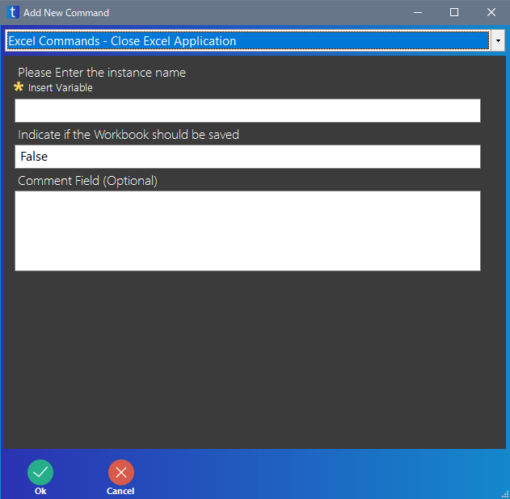
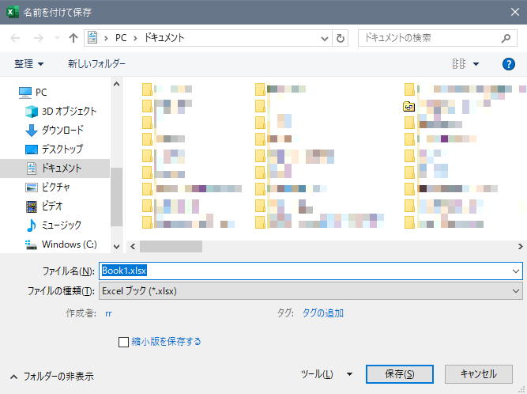

無料で使える RPA の taskt の使い方を紹介しています
Excel を終了します。
ファイルを保存するかの確認メッセージを表示するか、しないかを変更できます。

| 項目 | 意味 |
|---|---|
| Please Enter the instance name | 操作する Excel のインスタンス名を入力します インスタンス名は Create Excel Application で指定したものを入力してください |
| Indicate if the Workbook should be saved | Excel ファイルを変更し、保存せずに閉じようとした場合に表示される確認のメッセージを、表示するかどうかを変更できます True でメッセージを表示します False でメッセージを表示しません |
| Comment Filed (Optional) | コメントを入力します 入力しなくてもいいです |
もし Add Workbook 命令で作った新規の Excel ファイルならば、Indicate if the Workbook should be saved を True にした場合、ファイルを保存する画面が表示されます。このとき、ファイルを保存する画面が閉じられるまで、スクリプトの次の命令は実行されません。
False にした場合、Excel が終了し、ファイルは保存されません。

もし Open Workbook 命令で Excel ファイルを開いている状態ならば、Indicate if the Workbook should be saved を True にした場合、ファイルが保存されて Excel が終了します。このとき、確認の画面などは表示されません。
False にした場合、Excel が終了し、ファイルは保存されません。